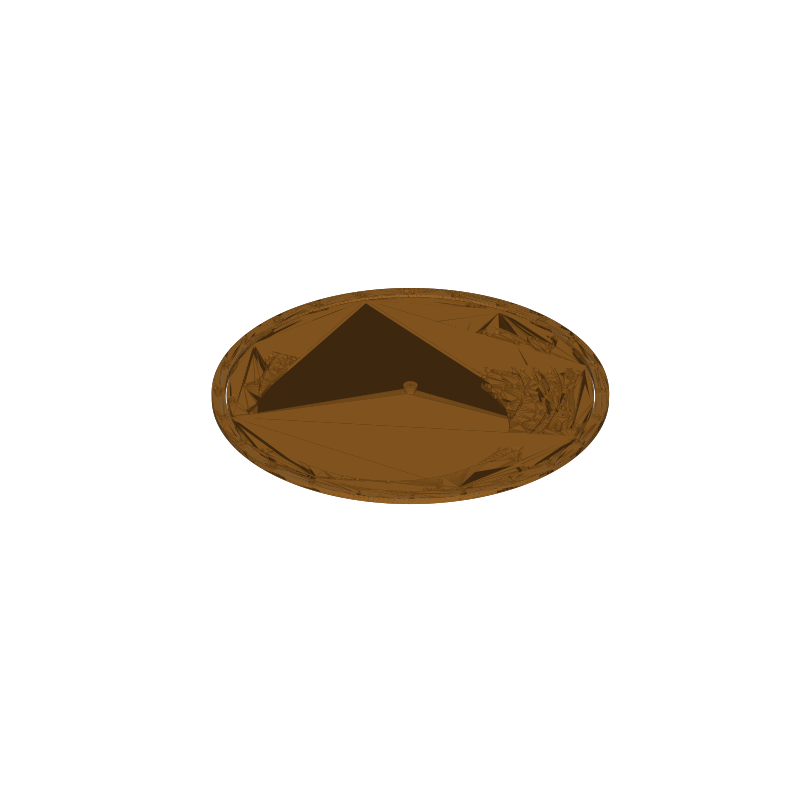

Parametric planisphere STL, a star wheel for 45°N
A planisphere shows which stars are up at any hour of any night. Turn the star wheel to your date, read the hour marks around the edge, and the cut-out window frames the sky above the horizon for 45 degrees north. Sirius and the winter hexagon in January, the summer triangle in July, all from one wheel.
The design uses three printed parts and no fasteners. The backer disc holds a snap pin with a barb; the star wheel spins on it; the outer ring snaps over the backer rim and carries the hour scale. Print each part flat, push the wheel onto the pin, snap the ring on, done.
The wheel face carries 416 naked-eye stars down to magnitude 4.0 from the HYG catalog, an ecliptic band, declination circles, and a date ring with month names and week ticks. Star holes are sized by magnitude from 2.4 mm down to 1.2 mm, so bright stars read as bigger dots. The map radius at the celestial equator is 30 mm.
This page carries the measured spec sheet: dimensions taken from the mesh, the part breakdown, and preview renders, so you can check the sizes before you slice.

Spec sheet, measured from the mesh
| Spec | Value |
|---|---|
| As exported | 105.6 × 105.6 × 2.89 mm, three parts nested flat on one bed; split to objects in the slicer before printing |
| Backer disc | Ø97.6 × 1.0 mm with a Ø3.2 mm snap pin 1.4 mm tall and a Ø3.8 × 0.5 mm barb on top; total stack 2.89 mm |
| Star wheel | Ø96.8 × 1.2 mm, spins on the pin through a Ø3.6 mm center hole (3.2 mm pin + 0.4 mm clearance) |
| Stars | 416 stars to magnitude 4.0 from the HYG catalog (v4.1), 310 hole regions after nearby stars merge; hole diameter 2.4 / 2.1 / 1.8 / 1.5 / 1.2 mm for magnitude 0 through 4 |
| Window | True horizon curve for 45°N, 32.2 cm²; checked against the altitude formula at 774 sample stars |
| Engraving | 0.5 mm deep on the wheel face: ecliptic band, declination circles, and a 2.4 mm date band with month names and week ticks; the 45°N label is raised 0.6 mm |
| Grip ring | Ø105.6 × 1.6 mm, snaps over the backer rim (0.4 mm clearance, three Ø0.7 mm rim nubs center it); hour numerals 1.9 mm tall and a tick every 15° are cut through the 3.6 mm band |
| Volume | 13.7 cm³ solid total (backer 7.5, wheel 4.5, ring 1.7), about 17 g of PLA at typical infill |
| Print time | About an hour, PLA, 0.4 nozzle, 0.2 mm layers |
| Construction | Three parts, no screws, no glue; every feature is a vertical through-cut, a top-face engraving or a small raised pad, so nothing needs supports |
| Mesh check | Watertight, winding consistent, 45,338 faces, 7 shells that group into the 3 printed parts (trimesh 5.1.0, 2026-09-10) |
| Files | STL (2.2 MB) and 3MF (641 KB) plus the parametric generator script |
| License | CC-BY 4.0 on the MakerWorld upload; royalty free, no AI training, direct from us |
How the three parts go together
The backer disc is the base. Its snap pin stands 1.9 mm proud of the disc face and ends in a Ø3.8 mm barb, half a millimeter wider than the wheel's Ø3.6 mm center hole. Push the wheel on and the barb clicks through; from then on the wheel spins freely, held between the disc below and the barb above, with the 0.4 mm diametral clearance keeping the turning light.
The ring is the last part. Its inner edge clears the backer rim by 0.4 mm, and three Ø0.7 mm nubs on the backer rim ride just inside the ring wall, so the ring snaps on centered and stays by friction. The hour numerals, 1.9 mm tall with a tick every 15° (one per sidereal hour of wheel rotation), are cut straight through the ring's 3.6 mm band, so the scale reads from both sides and every layer prints as a plain ring.
To use it, turn the wheel until its date mark lines up with the current hour on the ring. The window then shows the sky above the horizon for 45 degrees north at that moment. The wheel rotates 15 degrees per sidereal hour, and the date ring is exact at midnight.
Print notes
The three parts export nested on one bed, concentric, each already flat on the plate. Split to objects in the slicer first (Bambu Studio has a one-click split); sliced as a single body the parts would overlap and fuse, because the wheel and backer footprints sit inside the same circle by design.
After splitting, no part needs supports. The star holes, window, and ring numerals are vertical through-cuts. The date band, ecliptic and declination lines are shallow engravings in a top face, and the pivot pin is a plain vertical cylinder. The whole set is about 17 g of PLA and an hour of printing.
I have not test-printed this one yet. If the snap is loose or tight, say so in a make and I will adjust the clearance. Same for the wheel fit: PIN_CLR (0.4 mm as exported) widens or tightens the spin, and RING_CLR (0.4 mm) does the same for the ring snap.
The generator (gen_planisphere26.py) takes latitude, wheel radius, star magnitude limit and the clearances as parameters. Other latitudes need the window reshaped, so treat those as a project, not a setting.
Honest limits
The pole sits under the pivot, so Polaris is not marked, and every rotating star map shares that limit; the star holes need material around them, and the region within 2.5 mm of the center is left solid.
The date ring is exact at midnight and drifts 0.6 degrees per clock hour, which comes out under half a minute of star time at 45°N. Reading it an hour early or late moves the sky by less than you can notice at this scale.
Where to get the files
The planisphere is staged on our MakerWorld account and goes public on our profile once it is submitted and clears review.
More printed organizers and tools, with a status table for the pool: 3D printed desk organizers and printable tools.
FAQ
Why is Polaris missing from the map?
The pivot pin occupies the pole, and star holes need material around them to hold their shape. The generator drops every star within 2.5 mm of the center, where the hole spacing gets too tight. Polaris sits at the middle of that zone, and the wheel's spin axis points there anyway.
How accurate is the date ring?
The date-to-rotation mapping is exact at midnight and drifts 0.6 degrees per clock hour away from it, under half a minute of star time at 45°N. For finding constellations by eye that is far inside the reading error of the hour scale itself.
Can I print one for my latitude?
The window geometry, the map scale and the date offsets all follow from latitude in the generator, but the window is the hard part: it changes shape, not size, so a new latitude means checking the horizon curve against the altitude formula again. The script ships with the 45°N verification built in; treat other latitudes as a project rather than a one-parameter rebuild.